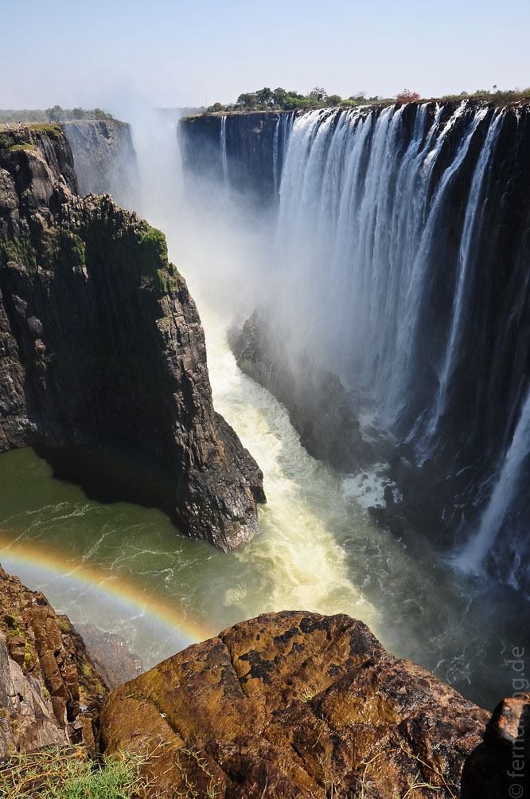
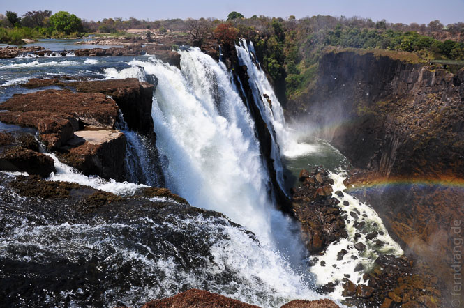
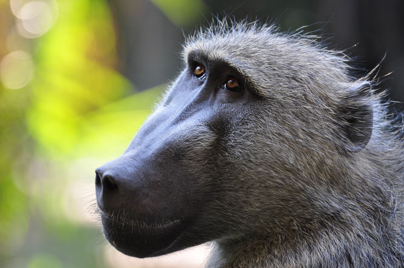
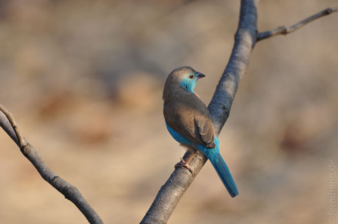

29/08/2010
Victoria Falls & Livingstone
Die Strecke Köln-Livingstone ist mit knapp 26 Stunden und Stopps in Frankfurt, Windhoek, Maun und Victoria Falls (Simbabwe) etwas länglich. Aber ein Besuch bei den Victoria Falls (diesmal Sambia) ist die Mühe wert.
In der ersten eisigen Nacht in einer kleinen Hütte bei den Jollyboys Backpackers in Livingstone haben sich unsere Schlafsäcke schon bezahlt gemacht. Das Klima ist ungewohnt: tagsüber Sommer, nachts Winter. Das erklärt auch die wilde Mischung aus Tropenfrüchten und dicken Bettdecken, die auf dem staubigen Markt angeboten wird.
Am Montag Morgen haben wir uns bei den Victoria Falls absetzen lassen, die 10km vor Livingstone liegen. Obwohl wir dem Ende der Trockenzeit entgegen gehen und das Wasser schon recht niedrig steht, boten die Fälle einen tollen Anblick. Auf einer Breite von mehr als einem Kilometer stürzt das Wasser des Sambesi 100 Meter in einen Riss im Land. Das Wasser schlängelt sich dann in verwirrenden Mäandern zwischen Simbabwe und Sambia entlang und bildet hier die Grenze.
Im Parkgelände gibt es verschiedene, angelegte Wege, von denen aus man die Fälle bewundern kann. Der Wind treibt das Wasser, das auf der einen Seite der Schlucht hinabstürzt, auf der anderen als feinen Nebel wieder hoch. Dadurch stehen den ganzen Tag über Regenbogen in der Schlucht. Auf einem anderen Weg, hinab zum Wasser, wimmelte es so von Affen, dass wir uns auf den Wegen aneinander vorbei drücken mussten.



Einen noch beeindruckenderen Ausblick auf die Fälle konnten wir jedoch bei einer improvisierten Tour mit einem einheimischen “Führer” erhaschen. Barfuß und mit hochgekrempelten Hosen haben wir uns im Krebsgang ein winziges Wehr entlang durch die flachen Wasser des Sambesi geschoben. Auf diese Weise gelangt man bis zur Mitte des Flusses und vor allem bis an die Kante der Fälle. Dort gibt es auch einen kleinen Pool, in dem man baden und bis zum Auslauf der Fälle schwimmen kann. 110 Meter senkrecht über der Schlucht konnten wir die Victoria Falls hautnah erleben - Regenbogen inklusive.


Livingstone selbst ist eine staubige, afrikanische Stadt, der man ihre 200 Tausend Einwohner nicht ansieht. Zusammen mit der Sonne machen hier sogar die meisten Läden um sechs Uhr abends dicht. Der Rückweg von den Fällen in einem lokalen Minibus mit 16 Erwachsenen und 8 Kindern auf 12 Plätzen hat uns aber direkt in Urlaubsstimmung katapultiert: Als ein großer Elefant am Straßenrand auftauchte, ist ein wildes Geschrei losgebrochen, weil die Hälfte der Leute Angst hatte weiterzufahren, und die anderen das albern fanden. This is Africa…
